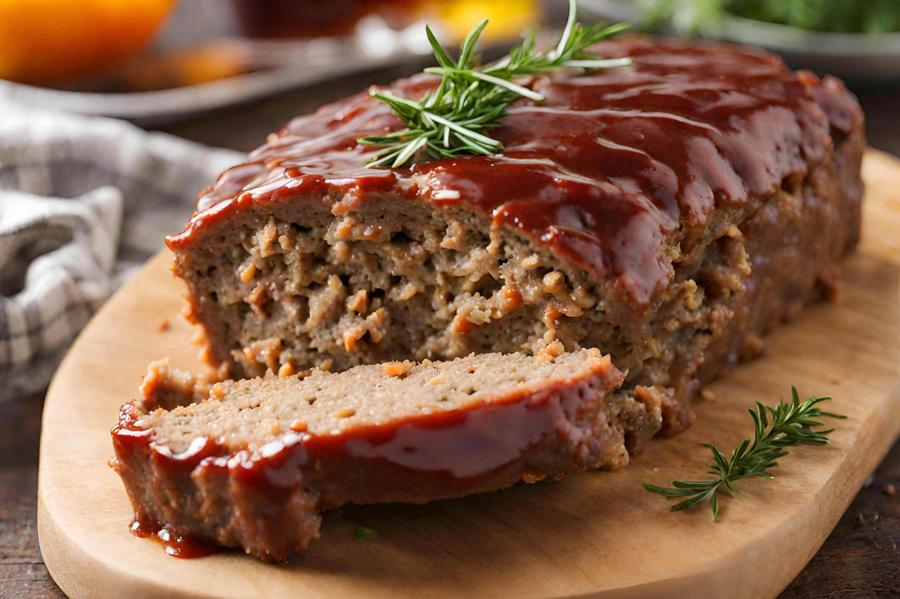

HOME
Meat Loaf

Description
Meatloaf is a dish of ground meat combined with other ingredients, formed into the shape of a loaf, then baked or smoked.
Ingredients
- Lean Ground Beef – use 80% or 85% lean meat.
- Onions and Garlic – aromatics that add flavor to the meatloaf
- Breadcrumbs and Eggs – act as binders to hold the meatloaf together
- Ketchup – adds flavor and tenderizes the ground beef
- Milk – Hydrates the bread crumbs to add moisture and also helps tenderize the beef for a softer and juicier meatloaf.
- Seasonings – Fresh parsley adds freshness to the meatloaf.
- For the Glaze – combining ketchup, white vinegar, brown sugar, garlic powder and onion powder create a sweet and tangy glaze
Steps
- Prep – Line a rimmed baking sheet with parchment paper or foil for easier cleanup, and preheat oven to 350°F.
- Sautee Onion -in a bit of oil over medium heat for 5-7 minutes, stirring occasionally until softened and golden. Transfer it to a plate and set aside to cool slightly.
- Make the Meatloaf Mixture – In a large bowl, add all of the meatloaf ingredients and mix just until well combined (your hands are your best tool for mixing – put on disposable gloves if you want to).
- Shape Meatloaf and Bake – Add meat to the pan and shape it into a meatloaf about 8 inches long, 4 inches wide and 3 inches tall. Bake uncovered at 350˚F for 40 minutes.
- Make the Meatloaf Glaze – In a small bowl, mix all of the ingredients together for the sauce until combined.
- Spread the sauce over the Meatloaf, then return to the oven and bake an additional 20 minutes or until the internal temperature is 160˚F on an instant-read thermometer. Rest the meatloaf for 10-15 minutes before serving, and it will be much easier to slice.